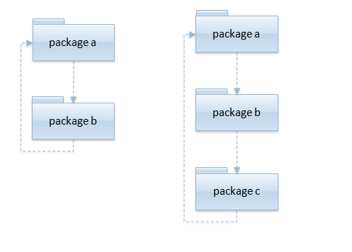

Introduction
Two packages are said to be involved in a cyclic dependency when package A depends on package B and package B depends on package A. This is called a direct cyclic dependency. Cyclic dependencies are created in various ways at different layers within a software system. It's also possible for a cyclic relationship in one layer to cause cycles in another. 
Cyclic dependencies hurt a software system's goals:
-
Understandability
Understandability
Modifiability is controlled change to the system in which some parts are altered without increasing the complexity or obscuring the logic of the original structure.
- Flexibility
-
Modularity
Modularity
An approach to developing software that breaks projects into smaller units designed so that they can work with other sections of the program. Modifying the way that modules work will have no adverse affects on the other components of a program.
-
Modifiability
Modifiability
Understandable software is critical in managing complex systems. Software that is easily understood acts like a bridge between the problem and its solution.
-
Reliability
Reliability
Reliability is the extent to which a software yields consistent, stable, and uniform without any human intervention and is crucial for any software system that must operate for long periods.
-
Maintainability
Maintainability
The ease with which a software system can be modified to change or add capabilities, improve performance, or correct defects.
By using Architecture Rules to Assert your Architecture, you are taking the first step in developing a strong architecture by actively managing package relationships.
Aside from the adverse affects on the software development goals, cyclic dependencies create these negative consequences for the system:
- Diminish the ability to determine a package's purpose.
- Changes impact seemingly unrelated components of the architecture.
- Separation of layers.
- Packages cooperating in a cycle must be released as an atomic unit.
Determine a Package's Purpose
When future developers come along to maintain the software the presence of cycles can diminish the ability for that developer to determine a package's purpose. This hurts the software's clarity and understandability. The end result will be the introduction of bugs, or an increase in the amount of time required to modify the software.
Changes Impact Unrelated Components
When a class involved in a cycle is modified, it could change the bahavior of the other class involved in the cycle. This makes it difficult to accurately assess and manage the impact of changes to the system. This directly hinders the modifiability of your software. Reliability is also attacked since changing the bahavior of an unrelated class could introduce a bug.
Affecting other components also introduces a maintenance and testing issue, since you can't do anything to either class without possibly affecting the other. A situation exists where class A needs to compile against class B, but class B needs to compile against class A.
Separation of Layers
Most architectural approaches recognize the advantages of layered architectures. For example, if you develop a presentation layer, a business or logic layer, and a database access layer, you are able to swap out one implementation of a layer for another. Such as replacing a JDBC data access layer with one that utilizes Hibernate, or a JSP presentation layer for a Flash or PHP presentation layer.
Cyclic dependencies across layers couple the layers, defeating the purpose of layering. If a cycle exists between the service layer and the data access layer, then those two layers are no longer interchangeable. Thus, modifiability of the software is lowered. The layers are no longer encapsulated.
Packages Must be Released as an Atomic Unit
The Spring Framework is inspiring when it comes to its modular design. The Spring Framework can be considered as a collection of smaller frameworks. Most of these frameworks are designed to work independently of each other yet provide better functionalities when used together.
This modularity by design, allows the Spring Framework to released as a full framework (spring.jar) or modularly, so that the users can use the features that they are interested, and nothing more (spring-core, spring-ldap, spring-orm, spring-aop, spring-beans, spring-mock, and on and on...). See all of the modules here.
When cyclic dependencies exist, your ability to make and release independent modules is removed. Packages that may not be related must be released as a single jar, or module.
ArchitectureRules wraps JDepend, a java library which is able to identify these cyclic dependencies. Upon detecting a cyclic dependency, a CyclicDependencyException is thrown, a RuntimeException whose message notifies you of which packages are involved in a cyclic dependency:
...architecturerules.exceptions.CyclicRedundancyException: cyclic dependencies found: -- test.com.seventytwomiles.services | | | |-- test.com.seventytwomiles.dao.hibernate | -- test.com.seventytwomiles.dao.hibernate | |-- test.com.seventytwomiles.services